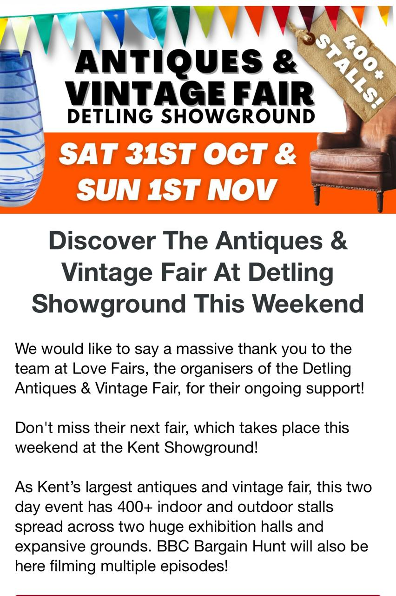

Antiques & Vintage Fair
- Dates
- Saturday 31 October and Sunday 1 November 2026
- Venue
- Detling Showground (Kent Showground), Detling, Kent
- Plan
- Just an option for something to do over the weekend. No day or visiting time chosen; not a confirmed booking. Calendar entry shows as free.
- From the flyer
- Organised by Love Fairs. 400+ indoor and outdoor stalls across two exhibition halls and the grounds. The flyer says BBC Bargain Hunt will be filming.
- Opening hours & admission
- Not provided in the supplied image; check with the organiser before travelling.
Original flyer

